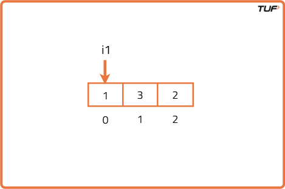
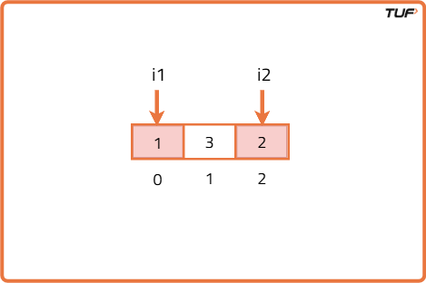
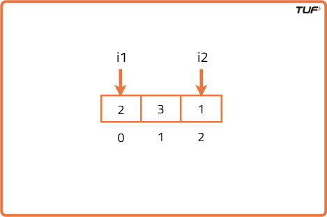
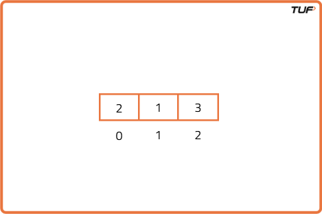

next_permutation : find next lexicographically greater permutation
Problem Statement: Given an array Arr[] of integers, rearrange the numbers of the given array into the lexicographically next greater permutation of numbers.
If such an arrangement is not possible, it must rearrange to the lowest possible order (i.e., sorted in ascending order).
Examples
Input: Arr[] = {1,3,2} Output: {2,1,3} Explanation: All permutations of {1,2,3} are {{1,2,3} , {1,3,2}, {2,13} , {2,3,1} , {3,1,2} , {3,2,1}}. So, the next permutation just after {1,3,2} is {2,1,3}. Input : Arr[] = {3,2,1} Output: {1,2,3} Explanation : As we see all permutations of {1,2,3}, we find {3,2,1} at the last position. So, we have to return the lowest permutation.
Disclaimer: Here is the practice link to help you assess your knowledge better. It's highly recommend trying to solve it before looking at the solution.
Brute-Force Approach
Algorithm
The brute force approach to find the next permutation is to find all possible permutations of the array and then look for next permutation.
- Find all possible permutations of elements present and store them. Sort the permutations and search input from all possible permutations. Print the next permutation present right after it.
- If the current permutation is the last, return the first permutation in the list.
Code
#include <bits/stdc++.h>
using namespace std;
class Solution {
public:
// Function to find the next permutation
vector<int> nextPermutation(vector<int>& nums) {
// Store all permutations
vector<vector<int>> all;
// Generate all permutations
sort(nums.begin(), nums.end());
do {
all.push_back(nums);
} while (next_permutation(nums.begin(), nums.end()));
// Traverse the list to find current permutation
for (int i = 0; i < all.size(); i++) {
if (all[i] == nums) {
// If it's the last permutation
if (i == all.size() - 1)
return all[0];
// Return the next one
return all[i + 1];
}
}
// Return original if not found (shouldn't happen)
return nums;
}
};
int main() {
Solution sol;
vector<int> nums = {1, 2, 3};
vector<int> result = sol.nextPermutation(nums);
for (int x : result) cout << x << " ";
cout << endl;
return 0;
}
Complexity Analysis
Time Complexity: O(N!*N), since we are generating all possible permutations, it takes N! time.Space Complexity: O(N!), storing all permutations.
Optimal Approach
Algorithm
We want to rearrange the array to form the next greater permutation.
If that's not possible (i.e., it's the last permutation), we return the smallest one (i.e., sorted ascendingly).
To find this next permutation with minimal change, we need to find a digit that can be increased slightly to make the number bigger and then rearrange the remaining part to be the smallest possible.
To find this next permutation with minimal change, we need to find a digit that can be increased slightly to make the number bigger and then rearrange the remaining part to be the smallest possible.
- Traverse from the end and find the first index where the current digit is smaller than the next one (this is the "breaking point").
- Then again traverse from the end to find the first digit greater than the breaking point digit and swap them.
- Finally, reverse the part of the array to the right of the breaking point to get the smallest next permutation.
- If no such breaking point exists (entire array is descending), just reverse the whole array.




Code
#include <bits/stdc++.h>
using namespace std;
// Solution class
class Solution {
public:
// Function to find next permutation
void nextPermutation(vector<int>& nums) {
// Set index to -1
int index = -1;
// Find the first decreasing element from end
for (int i = nums.size() - 2; i >= 0; i--) {
// If a smaller element found
if (nums[i] < nums[i + 1]) {
// Store index
index = i;
break;
}
}
// If no such index found
if (index == -1) {
// Reverse the entire array
reverse(nums.begin(), nums.end());
return;
}
// Find element just greater than nums[index]
for (int i = nums.size() - 1; i > index; i--) {
// Swap the two
if (nums[i] > nums[index]) {
swap(nums[i], nums[index]);
break;
}
}
// Reverse the part after index
reverse(nums.begin() + index + 1, nums.end());
}
};
// Main function
int main() {
// Input array
vector<int> nums = {1, 2, 3};
// Create object
Solution sol;
// Call the function
sol.nextPermutation(nums);
// Print result
for (int num : nums) {
cout << num << " ";
}
cout << endl;
return 0;
}
Complexity Analysis
Time Complexity: O(N), we find the breaking point and reverse the subarray in linear time.Space Complexity: O(1), constant additional space is used.